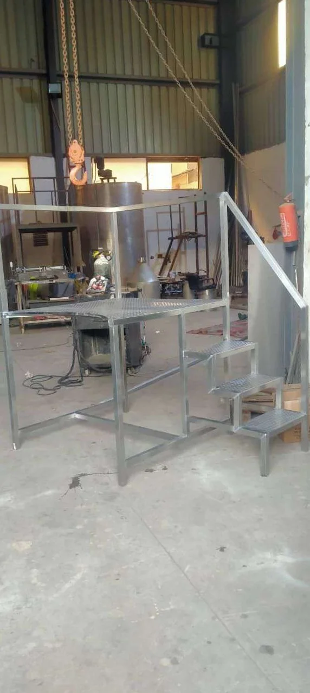

Tanks & Process Vessels · 8 photos
Stainless Steel Tanks & Process Vessels
Large cylindrical vessels, dimple-jacketed shells, mobile conical-bottom units, horizontal cradle tanks, and factory-installed systems.
Curated photographic record from Steel Technology's workshop and field installations, organized by equipment type.
Large cylindrical vessels, dimple-jacketed shells, mobile conical-bottom units, horizontal cradle tanks, and factory-installed systems.

Belt conveyor assemblies with geared drive motors, pneumatic sorting stations, motorized tubular transfer drives, and perforated drum machinery.

Flanged polished stainless tubular runs with radial ports, alongside heavy coiled tubular heat-exchange / process assemblies.

Checkered-plate platforms with stairs, horizontal U-trough mixers, custom hoppers, heavy structural steel frames, and fabricated metal gates.

Motorized tilting stainless processing machinery paired with high-sheen mirror-polished cooking and batch vessels.

Single multi-stage project series documenting structural framing, glazing, insulated wall panels, and door assembly inside a factory facility.
Descriptions identify visible fabricated equipment and workshop assemblies from our archive. Technical specifications and client applications are confirmed per project inquiry.